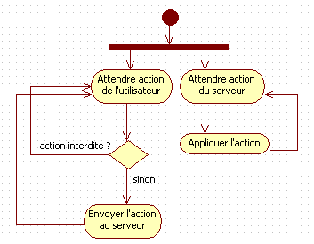
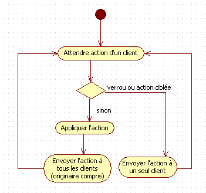
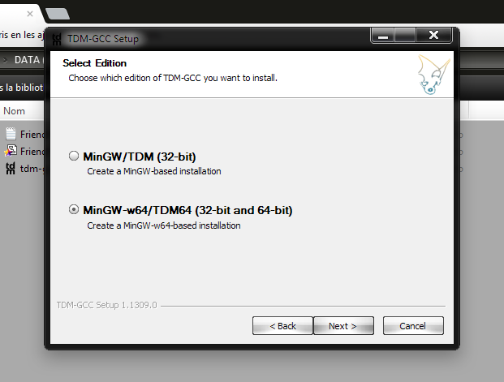

Cette doc est un fourre-tout pour nous trois et modifiable par nous trois.
Elle contient des infos sur comment nous allons nous y prendre, pour qu'on parte tous sur les même bases et que ce projet soit fun à réaliser.
17/01: Voici quelques explications concernant la plus récente version de l'analyse. Pas mal de choses ont changé concernant le moteur de peinture et le protocole (c'était un vrai casse-tête) mais maintenant il ne devrait absolument rien manquer.
En somme :
- Schéma de la boucle principale du client et du serveur
- Classes de GUI + explications
- Classes de PaintEngine + beaucoup d'explications
- Gantt
- Choses à faire
Schéma de la boucle principale du client et du serveur
Voici, ci-dessous, un schéma de la boucle principale du client (à gauche) et de celle du serveur :
Clarifications :
- Le client tourne sous 2 threads.
- Le serveur ne fait pas que relayer les messages. Il entretient un canevas chez lui, pour pouvoir l'envoyer aux nouveaux arrivants.
- Le serveur ne relaye les verrous qu'à un seul utilisateur ciblé. Chaque utilisateur stocke chez lui ses propres verrous, et donc...
- ...Le client vérifie lui-même si l'utilisateur a le droit de faire son action. (Ex. supprimer un calque)
- Le client ne voit son action appliquée que lorsque le serveur la lui renvoie. C'est pour être sûr que le canevas soit le même pour tout le monde à tout instant.
Du coup, côté client, le fonctions qui altèrent le canevas (comme createLayer()) devraient juste envoyer un message au serveur. Celui-ci sera renvoyé, le second thread va l'attraper et effectivement l'appliquer.
Une question qui pose problème est : Comment va-t-on distinguer les fonctions qui envoient les messages de celles qui les appliquent ?
Classes de GUI + explications
Pas besoin de beaucoup d'explications, cette partie est de toute façon quasiment finie. Il y a juste un ingrédient magique qu'il vous faut connaître pour que vous puissiez l'utiliser facilement : Les Insets.
En gros, on utilise un conteneur de Widgets, qui peut contenir d'autres conteneurs et d'autres widgets, etc.
Comment leur préciser la façon dont on veut qu'ils s'arrangent, sachant que la fenêtre peut être redimensionéne et tout chambouler ? C'est là que les Insets entrent en scène, et c'est assez miraculeux.
En somme, les insets, c'est : "Combien de place je laisse à gauche, en haut, à droite et en bas par rapport à mon parent ?"

TextContainer box;
box.setInsets(20, 20, 20, 20); //Ses bords se poussent de l'intérieur de 20 pixels par rapport à ceux du parent.
box.setInsets(0, 0, 0, 0); //Bords égaux à ceux du parentMais j'ai rajouté autre chose : En même temps que définir les insets, on peut définir une taille fixe pour un Widget. Exemple :
TextContainer box;
//Je veux que le box colle en bas de l'écran, s'étale en largeur le long de la fenêtre, mais aie une hauteur fixe de 100 pixels.
box.setInsets(0, -100, 0, 0);
//Ici, les 0 indiquent "mes bords collent à gauche, à droite et en bas",
//Et le -100 indique "je ne colle pas en haut : j'ai une hauteur fixe de 100 pixels."
//Morale : Coordonnées positives pour spécifier l'espacement par rapport aux bords du parent
//Coordonnées négatives pour spécifier une taille fixe.
//Par contre, les insets ne marchent qu'avec une coodonnées négative par axe :
box.setInsets(0, -100, 0, -100); //Ne pas tenter ça. Le résultat est indéterminé.
box.setInsets(0, -100, -100, 0); //Ca, ça devrait marcher (carré de 100x100 collé en bas à gauche).C'est comme ça que marche toute l'interface, et ça sauve des vies.
Classes de PaintEngine + explications
Diagramme de classes (c'est une police pixels, soyez sûr de zoomer dessus pour un ratio de 1:1)
Ce sera clairement le gros de notre boulot. Je l'ai beaucoup (malheureusement) modifié, corrigé, rafistolé, etc, parce que j'avais encore du mal à avoir une vue d'ensemble et certains aspects m'échappaient. Aujourd'hui, maintenant, je pense qu'il est très proche de ce qu'on doit réaliser. Si quoique ce soit n'est pas clair, demandez !
- Séparation en 3 couleurs : En gros, PaintEngine est la partie "Modèle" de FriendPaint (la partie "Vue" étant plutôt GUI). Or, le client et le serveur ne sont pas intéressés par les mêmes données (ex. le client veut savoir quelques calques il laisse visible, mais le serveur s'en fiche). Par contre, on ne veut pas écrire du code doublon.
Du coup, le diagramme est bien plus simple quand on le lit comme ça : "Le client et le serveur ont des intérêts différents (leurs classes), mais quelques inétrêts communs (les classes jaunes)." - En fin de compte, j'ai conféré les sockets à la classe User. Ca simplifie beaucoup de choses, et je ne vois pas pourquoi je n'ai pas fait comme ça avant.
- Un ClientUser par ClientCanvas. En gros, si on imagine que l'on supporte plusieurs onglets de canevas (à faire en dernier!), je peux m'appeler "Yoon" sur le premier canvas et m'appeler "Foo" sur le deuxième, et avoir une couleur différente. Je suis un utilisateur différent, en fin de compte, selon l'onglet sur lequel je travaille. Du coup, la classe Client "contient" plusieurs Users (avec chacun son canevas) : En réalité, un pour chaque onglet. (et user_index sert à retenir l'onglet courant)
Par contre, déjà faire fonctionner le programme avec un seul canevas, ça serait bien. - ClientUser est doté d'un thread. Comme vu avant, c'est le thread qui écoute et applique les ordres du serveur (le thread principal s'occupe de l'entrée utilisateur et de l'envoi de messages au serveur)
- Pour la classe Layer : applyBrush() sert juste à tracer un segment entre deux points. Cependant, au moment de tracer chaque pixel du segment, les pixels de brush sont appliqués à la place (i.e additionnés à ceux de l'image). Si erase_mode est vrai, on va seulement prendre l'alpha des pixels de la brosse, et en retirer autant des pixels de l'image.
- Client et Server sont des classes qui ne comportent que des attributs et méthodes statiques, et ne sont pas instanciables. C'est un peu comme le pattern Singleton, mais sans le getInstance() inutile à mon goût.
- Dans Client et Server : version est une String. C'est pour vérifier si le client et le serveur sont compatibles. Dans notre projet, on peut lui mettre la valeur qu'on veut.
- Concernant le reste, je vous invite à consulter le protocole, qui je l'espère sera définitif.
Gantt
Pour un maximum de sécurité, il vaut mieux donner tout ce qu'on a pour finir le projet quelques semaines avant la deadline, et bien exploiter les pauses du midi pour aller en salles machines. On ne le fait pas assez.
Choses à faire Oooh non
Je ne serai pas disponible dimanche parce que je participerai à un évènement.
Concernant Kostia, on lui montrera simplement où on en est. Il va peut-être s'alarmer en voyant que l'on ne peut pas encore "dessiner", mais le plus difficile (i.e l'analyse) a été fait, et en plus on a quasiment fini la partie interface que j'estimais chronophage. Nos challenges restants sont : Ecrire les classes de PaintEngine, et faire que GUI les manipule.
Seb :
- Ecrire les classes IconButton et TextButton, et TextCursor (aussi simple que sur le diagramme + getters et setters).
- Ecrire dans un fichier la classe Tool avec getters + setters (cf. PaintEngine)
- Ecrire la fonction updateBrush() de Tool. Etant donnés son radius et sa couleur, cette fonction doit assigner à sa brush une sf::Image de taille (radius*2)x(radius*2) contenant le bon disque de pixels colorés.
Une fois cela fait, écrire une fonction similaire qui génère un cercle de pixels gris (pourra servir pour le curseur de peinture du client).
Des algorithmes sur internet ou les TP de 1ère année (disques en ascii) pourront servir.
Val :
- Traduire tes travaux sur les calques et les adapter, en suivant le nommage du diagramme de classes de PaintEngine (pour toute question, n'hésite pas).
- Ecrire un programme new_tchat_clt.cpp et new_tchat_srv.cpp (aidés de tchat.cpp bien sûr), mais qui implémentent le Schéma de la boucle principale du client et du serveur vus en haut.
Ainsi, on les prendra comme bases pour la suite.
Pour faire simple, des utilisateurs pourront être rendus muets (un "verrou de parole"). Conformément aux diagrammes d'activité :- Si un utilisateur "mute" ou "unmute" un autre (On imagine qu'il tape "mute Jean-Pierre"), le paquet spécial envoyé n'est relayé par le serveur qu'à l'utilisateur ciblé.
- Si un utilisateur parle, son client vérifie s'il n'est pas "mute". Si oui, le paquet est envoyé au serveur, qui le relaye à tous (originaire compris). Sinon, il ne se passe rien.
- Le thread principal s'occupe de l'entrée utilisateur, et envoie les paquets (ou non) au serveur. Un 2nd thread au sein du client exécute les ordres du serveur.
- Ce qui est bien, c'est qu'ainsi on n'aura pas un tchat bloquant comme l'actuel. Grâce aux threads, on verra en temps réel les gens parler.
Yoan :
- Terminer le concept de l'interface finale, terminer les icônes, puis faire que la programme affiche cette interface.
- Ecrire la classe TextField.
Mise en place et compilation sous Linux
C'est la façon la plus simple, et elle est très familière.
$ sudo apt-get install -y libsfml-dev g++On ajoute g++ car il peut arriver qu'il ne soit pas présent dans le système. Mais en fin de compte, ce n'est rien de moins qu'un gcc lancé avec les options adaptées au c++.
Une fois le programme SFML écrit, la compilation n'est pas plus difficile (répertoire courant : FriendPaint):
$ g++ examples/pong.cpp -o bin/linux64/pong -lsfml-graphics -lsfml-audio -lsfml-window -lsfml-system -m64Pour tester Pong, il faut être dans son répertoire courant (afin qu'il trouve certains fichiers).
$ cd bin/linux64
$ ./pongMise en place et compilation sous Windows
Pourquoi utiliser Code::Blocks, Eclipse ou autres...
... Quand on peut utiliser le terminal de windows et un éditeur de texte, à l'ancienne ?
On assume que le système est un 64 bits.
Mise en place
Utilisons cmd.exe ! (Sous windows 8, il y a aussi PowerShell) Les commandes sont presque les mêmes que sous Linux, mais :
- Sous Windows, on utilise des Backslashes (ça s'oublie);
- Le 'ls' de Windows est 'dir';
- Pour changer de drive, il faut entrer sa lettre avec deux points. (Ex. C:)
- La touche Tab fait comme sous Linux. Très pratique.
Dans un terminal cmd.exe, aller jusqu'au dossier FriendPaint.
Maintenant il vous faut installer TDM-GCC. Lancez 'dev_doc\tdm-gcc-4.8.1-3.exe' et suivez les bêtement les instructions.
La seule option que vous devez choisir est la suivante, parce qu'on est quand même bientôt en 2015 et qu'on est en 64 bits:
Je propose ce compilateur parce que la SFML a une distribution exprès pour lui. le dragon est un accident
Et en parlant de SFML, il n'y a cette fois rien à faire. Tout est dans le dossier FriendPaint, et conçu pour marcher avec TDM-GCC.
Compilation
Un exécutable 64 bits :
> g++ examples/pong.cpp -o bin/win64/pong -I./include -L./lib/win64 -lsfml-graphics -lsfml-audio -lsfml-window -lsfml-system -m64Un exécutable 32 bits :
> g++ examples/pong.cpp -o bin/win32/pong -I./include -L./lib/win32 -lsfml-graphics -lsfml-audio -lsfml-window -lsfml-system -m32Sous Windows, pour empêcher qu'une console s'ouvre à l'exécution, rajouter l'option suivante à la compilation :
-mwindowsOn précise juste au compilateur où trouver les headers SFML, et au linker où trouver ses fichiers objets.
Truc intéressant : Avec la suite TDM-GCC, les slashes sont automatiquement interprétés comme Backslashes.
Pour tester Pong, il faut être dans son répertoire courant (afin qu'il trouve certains fichiers).
> cd bin\win64
> pong.exeVous remarquerez que votre terminal ne connait pas make. Pas de soucis, en réalité il faut l'appeler comme ça :
> mingw32-make'mingw' veut dire MINimal Gnu for Windows. C'est une adaptaion de gcc, as, ld, make, etc, pour Windows.
TDM-GCC en est une autre, mais il n'ont pas refait make. Ils utilisent celui de minGW.
Editeur de texte ?
En voici plusieurs parmi les meilleurs (omettant Vim) :
- Notepad++
- Emacs 24 windows
- Sublime Text
Règles de développement
Langue
On programme en anglais, pour que le projet puisse continuer à être exploité par n'importe qui par la suite.
Indentation
- Tabulation à 4 espaces, et non le caractère '\0x9' (TAB). Sinon ça part n'importe où selon l'éditeur.
Configurer Emacs
Configurer Notepad++
Espaces de noms
- On n'utilise jamais les mots-clé 'using' ni 'using namespace'. Voir pourquoi.
Fichers headers
- On les nomme avec l'extension .hpp. Un Header typique (ici header.hpp) sera de la forme :
#ifndef HEADER_HPP #define HEADER_HPP /* Insérer des déclarations de classe et de prototypes de fonction ici. */ #endif /* HEADER_HPP */
Variables
- Les variables globales, c'est pas bien.
- On nomme nos variables avec des minuscules séparées par des underscores.
int my_var; - Les constantes '#define' ou 'const' écrites en majucules.
const int MY_CONST = 42;
#define YOUR_CONST 13 - Pour un tableau, on le nomme par le pluriel des éléments qu'il représente :
unsigned phone_numbers[8];
std::string thread_arguments[16]; - Lorsqu'on veut un tableau extensible (dont on veut facilement augmenter/diminuer la taille), on utilise un std::vector.
std::vector<int> my_telephones;
Fonctions/Méthodes
- On les nomme en camelCase.
void myFunction();
int anotherCoolFunction();
Classes
- On les nomme en CamelCase en commençant par une capitale.
class HautParleur;
Nouveautés du C++
- Références. En C++, on dispose de variables de pointeur, de valeur, mais aussi de références.
#include <cstdlib> void echange(int &a, int &b) { int tmp = a; a = b; b = tmp; } int main(int argc, char *argv[]) { int a = 42, b = 13; echange(a, b); /* a vaut 13 et b vaut 42 */ exit(EXIT_SUCCESS); }int& ma_variable; /* Déclaration d'une variable de référence. */ int& getVar(); /* Ce getter renvoie une référence vers un attribut (et non une copie de sa valeur).*/ /* Lorsqu'on la modifiera, l'attribut sera modifié, comme avec un pointeur. */ - Allocation dynamique. Fini les malloc() et free(). En C++, nous avons les opérateurs new et delete. Ne pas oublier que new renvoie un pointeur, pas comme en Java.
- On peut instancier un objet sans qu'il soit dynamique. (i.e sans new)
#include <cstdlib> #include <SFML/System.hpp> void threadFunc(void *arg) {} int main(int argc, char *argv[]) { char c; sf::Thread my_thread(&threadFunc, &c); /* Comme une variable normale, elle sera détruite à la fin de la fonction. */ sf::Thread my_thread2 = sf::Thread(&threadFunc, &c); /* Ca marche aussi. Pas besoin de new. */ exit(EXIT_SUCCESS); }